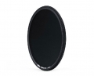

2007年NiSi超薄滤镜问世，凭借卓越的性能得到了业内专家的一致认可。2009年NiSi金环超级镀膜LR UV滤镜更是开启业界之先河，引发了滤镜业界的震动。NiSi滤镜双面防反射多层镀膜，防水、防油污及刮痕，镜面表面平行度高，可达到顶级的透光率以及超低的反射率。镜框表面全部进行精细喷砂及阳极处理，框 内作消光处理以防反光，镜框周围精细压花，使镜片在旋转时拥有无与伦比的舒适手感。自死锁压环技术，保证镜片在运输中的安全，NiSi(耐司)滤镜所有系列产品均符合欧盟ROHS要求。